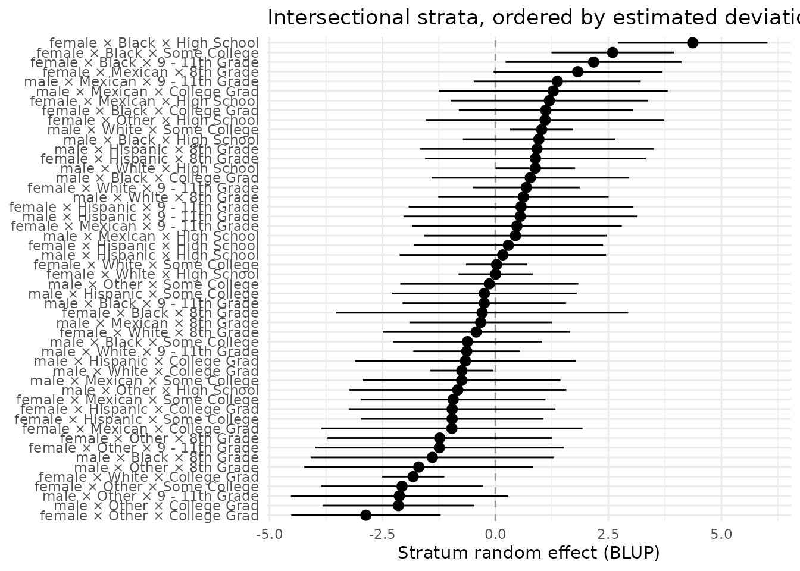

Reporting MAIHDA results: tidy output and publication tables
Hamid Bulut
2026-09-06
Source:vignettes/reporting_results.Rmd
reporting_results.RmdFrom a fitted model to a manuscript
This vignette covers the three reporting helpers that turn a
maihda() analysis into publication-ready output without you
recomputing anything: glance() (the
one-row headline), tidy() (estimates as a
tidy tibble), and maihda_table() (the two
canonical write-up tables). They read the quantities
summary() already computed, so the tables always agree with
print()/plot().
glance() – the one-row headline
glance() returns the whole MAIHDA headline as a
one-row tibble: the VPC/ICC (with its interval when
bootstrapped), the PCV, the additive/interaction shares, the
discriminatory accuracy (AUC/MOR) for a binary outcome, and the
bookkeeping (n_strata, nobs,
engine, family, mode).
glance(a)
#> # A tibble: 1 × 16
#> vpc vpc.conf.low vpc.conf.high pcv pcv.conf.low pcv.conf.high
#> <dbl> <dbl> <dbl> <dbl> <dbl> <dbl>
#> 1 0.0627 NA NA 0.596 NA NA
#> # ℹ 10 more variables: additive.share <dbl>, interaction.share <dbl>,
#> # auc <dbl>, auc.adjusted <dbl>, mor <dbl>, n_strata <int>, nobs <int>,
#> # engine <chr>, family <chr>, mode <chr>This is the row no generic mixed-model tool emits, because the
PCV needs the null + adjusted pair that only a
maihda() analysis holds. It is ideal for
rbind()-ing many analyses into a comparison table, or for
pulling a single number into inline text – e.g. the VPC is 6.3% and the
additive share (PCV) is 59.6%.
tidy() and glance() come from the
lightweight generics package – the same
generics broom/broom.mixed re-export – so they
dispatch whether you have broom, generics, or
just MAIHDA loaded. There is no hard broom
dependency.
tidy() – estimates as a tidy tibble
tidy() returns MAIHDA estimates in broom’s
estimate/std.error/conf.low/
conf.high shape, ready for dplyr,
ggplot2, or a table package. Three components
are available.
The stratum estimates (the default) – one row per intersection, with the human-readable label:
strata <- tidy(a, component = "strata")
head(strata)
#> # A tibble: 6 × 6
#> stratum label estimate std.error conf.low conf.high
#> <chr> <chr> <dbl> <dbl> <dbl> <dbl>
#> 1 1 male × Hispanic × Some College -0.245 1.04 -2.29 1.80
#> 2 2 male × Black × College Grad 0.772 1.11 -1.41 2.96
#> 3 3 female × White × College Grad -1.82 0.352 -2.51 -1.13
#> 4 4 male × Hispanic × 8th Grade 0.921 1.32 -1.66 3.51
#> 5 5 female × Mexican × 8th Grade 1.82 0.951 -0.0409 3.69
#> 6 6 male × White × College Grad -0.743 0.357 -1.44 -0.0431The variance components:
tidy(a, component = "variance")
#> # A tibble: 3 × 4
#> component variance sd proportion
#> <chr> <dbl> <dbl> <dbl>
#> 1 Between-stratum (random) 2.90 1.70 0.0627
#> 2 Within-stratum (residual) 43.4 6.59 0.937
#> 3 Total 46.3 6.80 1And the fixed effects
(component = "fixed"). For a two-model analysis,
which = "adjusted" reads the adjusted model instead of the
default null:
tidy(a, component = "fixed", which = "adjusted")
#> # A tibble: 11 × 8
#> term estimate std.error statistic df p.value conf.low conf.high
#> <chr> <dbl> <dbl> <dbl> <dbl> <dbl> <dbl> <dbl>
#> 1 (Intercept) 30.1 0.977 30.7 40 1.89e-29 2.81e+1 32.0
#> 2 Age 0.0148 0.00745 1.99 2949 4.69e- 2 2.04e-4 0.0294
#> 3 Gendermale -0.431 0.463 -0.933 40 3.57e- 1 -1.37e+0 0.504
#> 4 RaceHispanic -1.62 0.820 -1.98 40 5.51e- 2 -3.28e+0 0.0371
#> 5 RaceMexican -1.06 0.790 -1.34 40 1.87e- 1 -2.66e+0 0.535
#> 6 RaceWhite -1.67 0.658 -2.53 40 1.53e- 2 -3.00e+0 -0.337
#> 7 RaceOther -3.92 0.797 -4.92 40 1.52e- 5 -5.53e+0 -2.31
#> 8 Education9 - … 0.129 0.834 0.154 40 8.78e- 1 -1.56e+0 1.81
#> 9 EducationHigh… 1.08 0.813 1.32 40 1.93e- 1 -5.67e-1 2.72
#> 10 EducationSome… -0.177 0.795 -0.222 40 8.25e- 1 -1.78e+0 1.43
#> 11 EducationColl… -0.960 0.825 -1.16 40 2.52e- 1 -2.63e+0 0.708The df column holds containment (between-within) degrees
of freedom: a term constant within a stratum is tested against the
strata (here 40, the 50 strata minus the 10 columns constant within
one), a covariate varying within against n (Age
above). See ?summary.maihda_model.
Because the output is a plain tibble, you can build your own
figure instead of using the built-in plot() – here a
caterpillar of the stratum estimates, ordered by size. The default
(which = "null") estimates plotted below are the null
model’s total between-stratum deviations (additive +
interaction); for a caterpillar of the pure interaction estimates, tidy
the adjusted model instead:
tidy(a, component = "strata", which = "adjusted").
library(ggplot2)
strata_ord <- strata[order(strata$estimate), ]
strata_ord$label <- factor(strata_ord$label, levels = strata_ord$label)
ggplot(strata_ord, aes(x = estimate, y = label)) +
geom_vline(xintercept = 0, linetype = "dashed", colour = "grey60") +
geom_pointrange(aes(xmin = conf.low, xmax = conf.high)) +
labs(x = "Stratum random effect (BLUP)", y = NULL,
title = "Intersectional strata, ordered by estimated deviation") +
theme_minimal()
maihda_table() – the two canonical write-up tables
maihda_table() assembles the two deliverables a MAIHDA
paper reports (cf. Evans et al. 2024): a model-results
table contrasting the null (Model 1) and adjusted (Model 2)
fits, and a ranked-strata table ordering the
intersections by predicted outcome. The print() method
shows both in the familiar “estimate [low, high]” layout:
tab <- maihda_table(a)
tab
#> MAIHDA Results Table
#> ====================
#>
#> Engine: lme4 | Family: gaussian | Mode: two-model
#> Observations: 3000 | Strata: 50
#>
#> Model results:
#> Statistic Null (Model 1) Adjusted (Model 2)
#> Intercept 28.208 [27.298, 29.118] 30.050 [28.075, 32.026]
#> Between-stratum variance 2.900 1.172
#> Between-stratum SD 1.703 1.083
#> VPC/ICC 0.063 0.026
#> PCV (null -> adjusted) 0.596
#>
#> Strata ranked by predicted value (null model):
#> Rank Stratum N Predicted
#> 1 female × Black × High School 46 33.274 [31.621, 34.927]
#> 2 female × Black × Some College 76 31.413 [30.060, 32.766]
#> 3 female × Black × 9 - 11th Grade 29 31.124 [29.177, 33.071]
#> 4 female × Mexican × 8th Grade 33 30.759 [28.895, 32.623]
#> 5 male × Mexican × 9 - 11th Grade 34 30.206 [28.361, 32.051]
#> 6 female × Other × High School 9 30.099 [27.462, 32.736]
#> 7 female × Black × College Grad 30 30.044 [28.119, 31.969]
#> 8 male × Mexican × College Grad 11 30.036 [27.503, 32.570]
#> 9 female × Mexican × High School 20 30.007 [27.824, 32.190]
#> 10 male × Hispanic × 8th Grade 10 29.929 [27.345, 32.513]
#> ... ... ... ...
#> 41 female × Hispanic × Some College 26 27.762 [25.745, 29.779]
#> 42 female × Other × 8th Grade 12 27.741 [25.255, 30.227]
#> 43 female × Mexican × Some College 25 27.739 [25.697, 29.781]
#> 44 female × Other × 9 - 11th Grade 7 27.610 [24.855, 30.365]
#> 45 male × Other × 8th Grade 11 27.304 [24.771, 29.838]
#> 46 female × White × College Grad 335 27.073 [26.383, 27.763]
#> 47 female × Other × Some College 37 26.795 [25.004, 28.585]
#> 48 male × Other × 9 - 11th Grade 14 26.758 [24.359, 29.157]
#> 49 male × Other × College Grad 44 26.669 [24.988, 28.351]
#> 50 female × Other × College Grad 46 25.913 [24.259, 27.566]
#> Stratum RE
#> 4.367 [2.714, 6.020]
#> 2.594 [1.241, 3.947]
#> 2.174 [0.227, 4.121]
#> 1.823 [-0.041, 3.687]
#> 1.370 [-0.475, 3.215]
#> 1.101 [-1.537, 3.738]
#> 1.115 [-0.810, 3.040]
#> 1.279 [-1.254, 3.813]
#> 1.195 [-0.989, 3.378]
#> 0.921 [-1.663, 3.505]
#> ...
#> -0.957 [-2.974, 1.060]
#> -1.231 [-3.717, 1.255]
#> -0.935 [-2.977, 1.107]
#> -1.240 [-3.995, 1.515]
#> -1.695 [-4.229, 0.839]
#> -1.820 [-2.510, -1.130]
#> -2.066 [-3.857, -0.275]
#> -2.125 [-4.524, 0.273]
#> -2.145 [-3.826, -0.464]
#> -2.865 [-4.518, -1.212]
#> (30 strata between ranks 11 and 40 not shown; see $strata)
#> Predicted intervals are conditional (random-effect) only; Stratum RE is the stratum BLUP.
#>
#> Estimates are point values unless a [low, high] interval is shown. The
#> intercept interval is the Wald one summary() reports; the variance and SD
#> rows carry no interval.The $models element is a numeric,
export-ready data frame (statistics in rows, a column per model
with *_lower/*_upper interval columns), so it
drops straight into knitr::kable() or
write.csv():
knitr::kable(tab$models, digits = 3,
caption = "MAIHDA model-results table (null vs. adjusted).")| statistic | null | null_lower | null_upper | adjusted | adjusted_lower | adjusted_upper |
|---|---|---|---|---|---|---|
| Intercept | 28.208 | 27.298 | 29.118 | 30.050 | 28.075 | 32.026 |
| Between-stratum variance | 2.900 | NA | NA | 1.172 | NA | NA |
| Between-stratum SD | 1.703 | NA | NA | 1.083 | NA | NA |
| VPC/ICC | 0.063 | NA | NA | 0.026 | NA | NA |
| PCV (null -> adjusted) | NA | NA | NA | 0.596 | NA | NA |
write.csv(tab$models, "maihda_results.csv", row.names = FALSE)The $strata element holds every stratum ranked by
predicted BMI (the data behind the printed top/bottom rows):
head(tab$strata)
#> rank stratum label n predicted predicted_lower
#> 1 1 26 female × Black × High School 46 33.27402 31.62075
#> 2 2 29 female × Black × Some College 76 31.41301 30.05958
#> 3 3 45 female × Black × 9 - 11th Grade 29 31.12401 29.17711
#> 4 4 5 female × Mexican × 8th Grade 33 30.75902 28.89508
#> 5 5 34 male × Mexican × 9 - 11th Grade 34 30.20626 28.36146
#> 6 6 32 female × Other × High School 9 30.09881 27.46154
#> predicted_upper random_effect re_lower re_upper
#> 1 34.92729 4.366992 2.71372474 6.020259
#> 2 32.76643 2.594013 1.24058985 3.947436
#> 3 33.07091 2.174211 0.22730689 4.121115
#> 4 32.62295 1.823058 -0.04088002 3.686996
#> 5 32.05106 1.369987 -0.47481559 3.214789
#> 6 32.73607 1.100737 -1.53652679 3.738002If you use gt or
flextable for formatted tables, the same
numeric frame feeds them directly (shown only if gt is
installed):
gt::gt(tab$models)Choosing a model structure with maihda_ic()
The VPC and PCV do not tell you whether a different model
specification (another covariate set, strata definition, or family) fits
better. maihda_ic() answers that with information criteria
– AIC/BIC for the likelihood engines,
WAIC/LOOIC for brms – and a delta
column (gap from the best model):
maihda_ic(a)
#> MAIHDA Information Criteria
#> ===========================
#>
#> model n estimator df logLik AIC BIC delta
#> Model1 (Null) 3000 ML (refit from REML) 4 -9940 19889 19913 15.5
#> Model1 (Adjusted) 3000 ML (refit from REML) 13 -9924 19873 19951 0.0
#>
#> delta = difference from the best model on AIC (lower is better).
#> REML lmer fit(s) were refitted with ML so AIC/BIC are comparable across different fixed effects.
#> Information criteria are only comparable across models fitted to the same analytic sample with the same weights (and, for AIC/BIC, the same family).
#> See also
- Introduction to MAIHDA – the end-to-end workflow.
- Finding interaction patterns – which strata show the clearest residual deviations from additive expectations.
- Interpreting MAIHDA plots and diagnostics – and how to restyle the built-in plots.